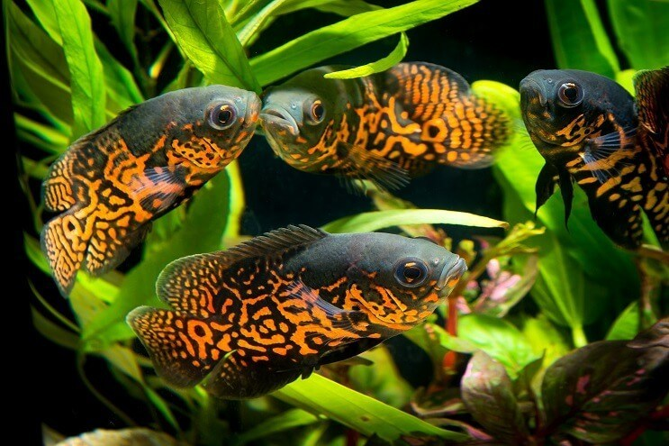
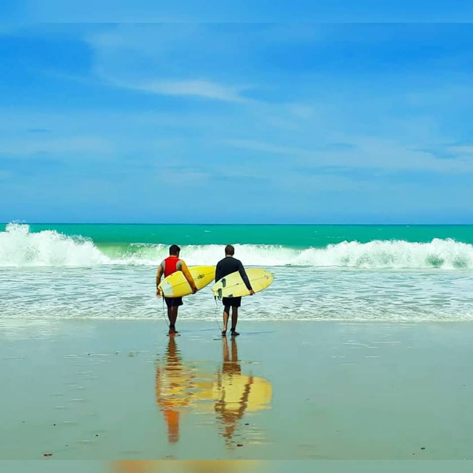

Oi! Meu nome é Amaury, analista de sistemas no Brasil, com base em Maceió, onde trabalho como professor, e em Recife, onde estudo doutorado em ciência da computação com ênfase em engenharia de software. Como pesquisador, sou um membro regular do grupo de pesquisas NEXT. Durante o perído do meu mestrado, fui pesquisador no NEES - Núcleo de Excelência em Tecnologias Sociais. Para visualizar meu currículo completo, basta acessar a base de dados Lattes.
Este site funciona como um portfólio para qualquer pessoa interessada no meu trabalho, e irá conectá-lo(a) facilmente aos meus projetos acadêmicos, repositórios, canais e tudo relacionado. Sinta-se à vontade para falar comigo se quiser perguntar alguma coisa ou apenas dizer oi - basta ir aos ícones abaixo da minha foto para obter informações de contato.
P.S.: Esta página está em progresso, ok? Eu irei atualizá-la nos próximos dias, meses, anos...
Doutorando em Ciência da Computação, 2022
Universidade Federal de Pernambuco, Brasil
Mestre em Modelagem Computacional de Conhecimento, 2016
Universidade Federal de Alagoas
Bacharel em Sistemas de Informação, 2013
Universidade Federal de Alagoas, Brasil
Curso Técnico indegrado em Desenvolvimento de Sistemas, IFAL
Bacharelado em sistemas de Informação, IFAL
Bacharelado em sistemas de Informação EaD, UFAL
Bacharelado em Análise e Desenvolvimento de Sistemas, FAT
Bacharelado em Engenharia da Computação, FAT
Nasci em Pernambuco, na cidade de Caruaru, e vivo desde os sete anos de idade na cidade de Maceió, Alagoas.
Um dos meus hobbys favoritos é o aquarismo jumbo - gosto, em especial, dos ciclídeos americanos e peixes primitivos.
E no tempo livre, tento pegar umas ondas com meu irmão